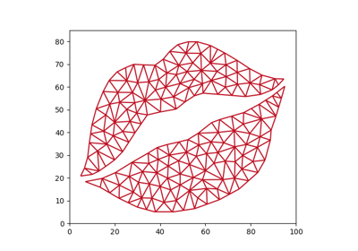
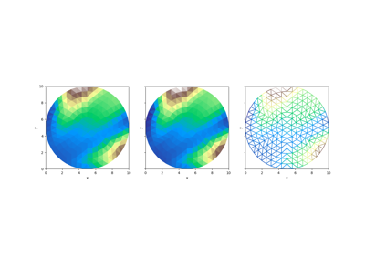

Sample Data#
Xugrid provides some sample data and ways of generating synthetic data through
the xugrid.data module.
Where are my data files?#
The sample data files are downloaded automatically by pooch the first
time you load them. The files are saved to the default cache location on your
operating system. The location varies depending on your system and
configuration. We provide the xugrid.data.locate() function if you
need to find the data storage location on your system.
You can change the base data directory by setting the XUGRID_DATA_DIR
environment variable to the desired path.
Available datasets#
These are the datasets currently available:
Provinces NL

Xoxo



Disk